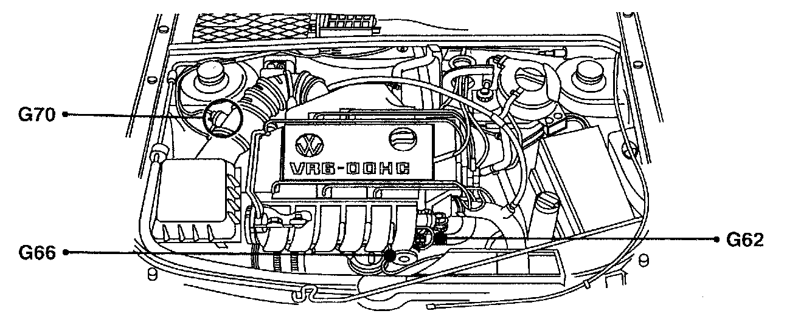

Operation CHARM
: Car repair manuals for everyone.
Home
>>
Volkswagen
>>
1997
>>
GTI (1H1) V6-2.8L (AAA)
>>
Repair and Diagnosis
>>
Diagrams
>>
Components
>>
Sensors
>>
G70 Mass Air Flow (MAF) Sensor
G70 Mass Air Flow (MAF) Sensor
Component View:

Mass Air Flow (MAF) Sensor G70: